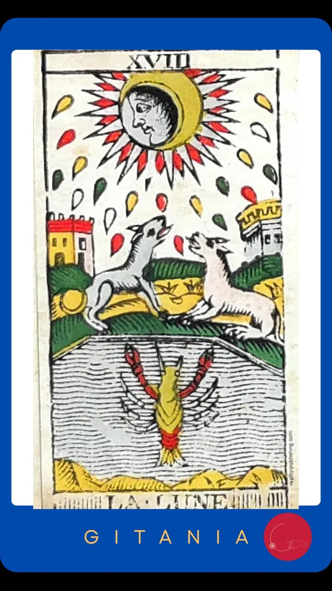

Historia del tarot
El mito del tarot egipcio: Court de Gébelin, Etteilla y el «Libro de Thot»
En 1781, un erudito francés miró un juego de cartas italiano y vio en él un libro del antiguo Egipto. Pocos años después, Etteilla lo convirtió en un método de cartomancia y en un mazo propio. Esta es la historia de esa visión, contada con sus propios textos.

En nuestra primera entrada contamos que el tarot nació en el norte de Italia en el siglo XV como un juego de cartas de lujo, y mencionamos de pasada a dos franceses del siglo XVIII que le dieron otra vida: Antoine Court de Gébelin y Jean-Baptiste Alliette, que firmaba «Etteilla». Hoy los miramos de cerca, con sus textos abiertos sobre la mesa. De ellos viene una de las imágenes más persistentes sobre las cartas: que el tarot es un libro del antiguo Egipto.
Un pastor ante un mundo primitivo
Antoine Court de Gébelin (Nimes, 1725 – París, 1784) fue pastor protestante y erudito. Su gran obra, Le Monde primitif, analysé et comparé avec le monde moderne, se publicó por tomos desde 1773 y quería reconstruir, a partir de las lenguas, los mitos y los símbolos, una civilización primitiva, sabia y universal. En el tomo VIII, de 1781, entre ensayos sobre historia, blasones, monedas y juegos, aparece uno titulado «Du jeu des tarots», de la página 365 a la 394.
«Un libro egipcio» que estaba en manos de todos
El ensayo se abre como un relato de misterio. Si alguien anunciara que todavía existe un libro de los antiguos egipcios, salvado de las llamas que devoraron sus bibliotecas, todos querrían conocerlo. ¿Y si además ese libro circulara desde hace siglos por media Europa, en manos de cualquiera, sin que nadie sospechara su origen? Entonces llega la revelación:
«Este libro egipcio, único resto de sus soberbias bibliotecas, existe en nuestros días».Antoine Court de Gébelin, Monde primitif, t. VIII (1781), p. 365 (traducción propia)
Ese libro, dice, es el juego de los tarots, con sus 77 o 78 cartas. Y añade un detalle que hoy se lee con otra luz: era un juego desconocido en París, pero muy conocido en Italia, en Alemania y hasta en Provenza. El mapa que dibuja es, punto por punto, el de un juego de cartas europeo de su tiempo.
Un cuarto de hora ante El Mundo
Él mismo cuenta cómo se abrió esa visión. Unos años antes lo invitaron a casa de una amiga, a quien llama «Madame la C. d'H.», recién llegada de Alemania o de Suiza, y la encontró jugando al tarot con otras personas. Le dijeron que era un juego rarísimo, «una rapsodia de las figuras más extravagantes», y le enseñaron la carta más cargada de imágenes: El Mundo. Él reconoció enseguida una alegoría, todos dejaron la partida para mirar, le fueron mostrando otras cartas y entonces:
«En un cuarto de hora el juego fue recorrido, explicado, declarado egipcio».Antoine Court de Gébelin, Monde primitif, t. VIII (1781), p. 367 (traducción propia)
Es una escena preciosa sobre el poder de las imágenes: bastó una carta para que un hombre culto viera en ella todo un mundo. La intuición llegó de golpe, en un salón, frente a El Mundo. Más adelante veremos lo que dicen los documentos; lo que esta escena ya muestra es cómo una imagen puede abrir, de pronto, un universo.
Osiris en El Carro, Isis en La Luna
Court de Gébelin recorrió los triunfos uno por uno, y en cada imagen buscó un eco egipcio. El Carro se volvió «Osiris triunfante». En La Luna, las gotas que caen eran «lágrimas de oro y de perlas», y lo explicó con Pausanias: según los egipcios, las lágrimas de Isis hacían crecer cada año las aguas del Nilo. Los dos perros eran los guardianes de los trópicos, una imagen que atribuye a los egipcios citando a Clemente de Alejandría, y las dos torres, las columnas de Hércules.
Cuando una carta no encajaba, la corregía. Para él, El Colgado no podía ser un hombre colgado: el original habría sido la Prudencia, un hombre con un pie en el aire que busca dónde apoyarlo, y un «cartier» presuntuoso, es decir, un fabricante de cartas, lo habría deformado por no entender la alegoría. También explicó el nombre: «Tar» sería camino y «Ro», rey; tarot querría decir, palabra por palabra, «el camino real de la vida». Y trazó una ruta: los egipcios habrían llevado a Roma el culto de Isis y, con él, el juego, que se quedó en Italia hasta pasar a Alemania y, con la corte papal en Aviñón, a Provenza.
Todo esto es su lectura de las imágenes, no un dato de archivo. El libro de referencia sobre el tema, A Wicked Pack of Cards, de Ronald Decker, Thierry Depaulis y Michael Dummett (1996), al describir lo que se construyó a partir de entonces sobre el tarot, usa la expresión «teorías sin fundamento» (traducción propia). La frase señala una distancia: la que hay entre esa visión y lo que los documentos permiten afirmar.
El conde de Mellet y el «Libro de Thot»
El mismo tomo incluye, justo después (pp. 395-410), un segundo ensayo firmado solo como «M. le C. de M.***». Court de Gébelin lo presenta como obra de «un oficial general, gobernador de provincia», y hoy se identifica como Louis-Raphaël-Lucrèce de Fayolle, conde de Mellet. Su primer apartado se titula, literalmente, «Livre de Thot»: el libro de Thot, el dios egipcio de la escritura, al que identifica con Mercurio. Propone que la palabra venía de «A-Rosh», doctrina de Mercurio, que con el artículo «T» daría «Ta-Rosh».
Mellet añadió otra idea que tendría un largo futuro: los 22 triunfos serían a la vez jeroglíficos y letras, y en una nota recuerda que el alfabeto hebreo tiene 22 letras. El Loco, la carta sin número, «completa el alfabeto sagrado». Su ensayo también describe una manera de «consultar la suerte» con las cartas, y ese fue el puente hacia lo que vino después.
Etteilla: del mazo de piquet al Libro de Thot
Jean-Baptiste Alliette (París, 1738-1791) firmaba Etteilla, que es su apellido al revés. En 1770 había publicado un libro para leer las cartas con un mazo común de 32 cartas, como contamos en nuestra primera entrada. Después de 1781 se pasó al tarot: entre 1783 y 1785 publicó los cuadernos de Manière de se récréer avec le jeu de cartes nommées tarots, que la Biblioteca Nacional de Francia conserva y ha digitalizado. No es casual que el libro de Decker, Depaulis y Dummett le dedique un capítulo titulado «Etteilla: el primer cartomántico profesional».
En 1788 fundó una «Sociedad de Intérpretes del Libro de Thot», y hacia 1788-1789 publicó su propio mazo, en el que rehízo las cartas con otro orden y otros nombres. El Instituto Warburg de Londres, que lo expuso en 2025, lo describe como las primeras cartas de tarot pensadas expresamente para la cartomancia. En esa misma exposición se mostró una obra suya de hacia 1788, de la Wellcome Collection, cuyo título lo dice todo: el tarot «en forma de hojas del libro de Thot colocadas en el templo del Fuego en Menfis, Egipto». En 1790 siguió con su Cours théorique et pratique du livre de Thot.
Lo que dicen los documentos
Hay un dato de calendario que cambia la luz de la escena. Cuando Court de Gébelin escribió, nadie en Europa sabía leer jeroglíficos. Jean-François Champollion presentó su desciframiento ante la Académie des Inscriptions et Belles-Lettres el 27 de septiembre de 1822, y su Lettre à M. Dacier se publicó a finales de octubre de ese año, según la Biblioteca Nacional de Francia. Fue 41 años después del tomo VIII, y Court de Gébelin había muerto en 1784. Sus lecturas «egipcias» se apoyaban en autores griegos y romanos, como Pausanias o Clemente de Alejandría, y en su mirada ante las cartas, no en textos egipcios.
Los documentos, por su parte, no muestran un linaje egipcio. Todo apunta a Italia. El resumen de A Wicked Pack of Cards lo dice con claridad: «las cartas del tarot se inventaron en Italia a principios del siglo XV y, durante casi cuatro siglos, se usaron exclusivamente para jugar» (traducción propia). El Warburg presentó su exposición de 2025 con la misma idea: el recorrido del tarot empieza como un juego de cartas del siglo XV en la Italia del Renacimiento, y las cartas Visconti del norte de Italia son los ejemplos más antiguos que se conservan. Incluso hay mazos fechados por las marcas de agua de su papel entre 1437 y 1442, como contamos en nuestra primera entrada.
La geografía que describe Court de Gébelin —Italia, Alemania y Provenza— es la de los jugadores de tarot de su época. Y la escena que le abrió las cartas fue, precisamente, una partida.
Una nota sobre nuestro nombre. En ese mismo ensayo, Court de Gébelin habla de los «egipcios mal llamados bohemios» que se extendieron por Europa, y de ahí viene la imagen de la gitana que lee las cartas. Esa figura recorre el arte, la literatura y el cine: es una tradición viva, un imaginario poderoso. Gitania la honra a propósito. Como explicamos en nuestra primera entrada, no es el origen documentado de las cartas; es, para esta casa, un linaje artístico que elegimos sostener.
Una tradición que dejó huella
Una visión no necesita ser origen para dejar huella. Al contrario: casi todo el tarot esotérico posterior parte de aquí. La unión de los 22 triunfos con las 22 letras hebreas que propuso Mellet, el «Libro de Thot» y los mazos de Etteilla abrieron un camino. Según Decker, Depaulis y Dummett, durante cien años esa lectura oculta del tarot fue un fenómeno casi exclusivamente francés, y su libro sigue la línea de Court de Gébelin y Etteilla hasta Éliphas Lévi, a quien llaman «el segundo fundador», y Papus.
En el siglo XX el nombre de Thot volvió a aparecer en una de las barajas más conocidas: el Thoth Tarot de Aleister Crowley, pintado por Frieda Harris, cuyos originales expuso el Warburg en 2025 por primera vez en Inglaterra desde la muerte de la pintora en 1962. Para muchas personas, el Egipto del tarot sigue siendo una creencia viva y un lenguaje simbólico querido. Reconocerlo como lo que es —una tradición nacida en el siglo XVIII, con su propia belleza— no le quita fuerza: le da un lugar.
Lo que permanece abierto
Los documentos dicen de dónde vienen las cartas. No agotan, sin embargo, lo que ocurre cuando alguien se sienta frente a ellas. Court de Gébelin vio a Isis en La Luna en un cuarto de hora. Esa visión no prueba un origen egipcio, pero sí muestra algo que sigue abierto: las imágenes invitan a una lectura, y esa lectura tiene un lado simbólico, artístico e intuitivo que no se cierra con un dato. Hay un margen de misterio que merece quedarse. Es lo que Jung llamó «símbolos con los que se juega» y lo que Niki de Saint Phalle hizo a escala de arquitectura en su Jardín del Tarot.
Te proponemos un ejercicio. Mira La Luna sin buscar su significado en un libro. ¿Qué ves primero: las gotas, los perros, el cangrejo, las torres? ¿Qué historia se abre ante esa imagen? No hay una sola respuesta. Lo que aparece ya es una lectura: los documentos no la cierran; la imagen sigue hablando.
Fuentes
- Court de Gébelin, Antoine. «Du jeu des tarots», en Monde primitif, analysé et comparé avec le monde moderne, t. VIII. París, 1781, pp. 365-394. Facsímiles: Gallica (BnF) e Internet Archive (ejemplar de John Adams, Boston Public Library).
- [Conde de Mellet]. «Recherches sur les Tarots…», firmado «M. le C. de M.***», en el mismo tomo, pp. 395-410. Internet Archive
- Etteilla (Jean-Baptiste Alliette). Manière de se récréer avec le jeu de cartes nommées tarots. París, 1783-1785. Gallica (BnF): cuaderno digitalizado y cuarto cuaderno.
- Decker, Ronald; Thierry Depaulis y Michael Dummett. A Wicked Pack of Cards: The Origins of the Occult Tarot. Londres: Duckworth, 1996. Ficha con índice y resumen: Penn State University Libraries
- The Warburg Institute. «Tarot – Origins & Afterlives: Opening Soon at the Warburg Institute», 14 de enero de 2025. warburg.sas.ac.uk
- BnF Essentiels. «Lettre à M. Dacier relative à l'alphabet des hiéroglyphes phonétiques» (Champollion, 1822). essentiels.bnf.fr
- Wikipedia, como referencia secundaria para fechas: Antoine Court de Gébelin y Etteilla.
Las citas de Court de Gébelin y del conde de Mellet provienen del original francés de 1781; las de A Wicked Pack of Cards y del Instituto Warburg, del inglés. Las traducciones al español son nuestras.